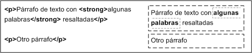

El modelo de cajas es una de las características más importante del lenguaje de hojas de estilos CSS, porque condiciona el diseño de las páginas web. El modelo de cajas es el comportamiento de CSS que hace que todos los elementos de las páginas se representen mediante cajas rectangulares.
Las cajas de una página se crean automáticamente. Cada vez que se inserta una etiqueta, se crea una nueva caja rectangular que encierra los contenidos de ese elemento, como en el siguiente ejemplo.
Las partes que componen una caja y el orden de visualización desde el punto de vista del usuario son los siguientes:
Al borde se le puede aplicar color un estilo y un ancho, por ejemplo algunos estilos que se pueden aplicar son:
Las propiedades de margin establecen el tamaño del espacio en blanco fuera del borde.
Para especificar el tamaño se fija el tamaño seguido de px por ejemplo "20px".
El margen se puede establecer en sus cuatro lados que son:
En este ejemplo
margin-top : 20;
margin-right : 10px;
margin-bottom : 15px;
margin-left : 25px;
Otra forma es definirlas todas en una sola linea, es comenzando colocando primero top, right, left y bottom, en este orden
margin: 20px 10px 15px 25px;
Si el margen tendrá la misma medida en los cuatro lados sería de la siguiente manera
margin : 20px;
El padding borra un área alrededor del contenido (dentro del borde) de un elemento. Este cumple las mismas
especificaciones que el margin para fijar los valores, lo unico que cambia es la que utiliza pdding en vez
de margin por ejemplo:
padding-top : 20;
padding-right : 10px;
padding-bottom : 15px;
padding-left : 25px;